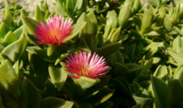
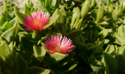
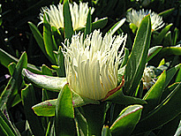
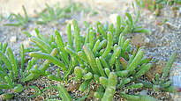

 N.E. BR. var. rubescens DRUCE")

5
| PHRYGANA | Fauna | Flora |
additions nouveautés |
espèces species |
contact-
info-commentaires: phrygana1 (at) gmail.com |
| diversité crétoise -- Cretan diversity | |||||
| A I Z O A C E A E |
|
|
 |
 | |
|
 |
| Aptenia cordifolia | Carpobrotus edulis edulis | Carpobrotus edulis rubescens | Mesembryanthemum crystallinum | Mesembryanthemum nodiflorum |
| 23 avril 2013 |
| © paul fontaine -- © Phrygana.eu 2007 -- 2013 |